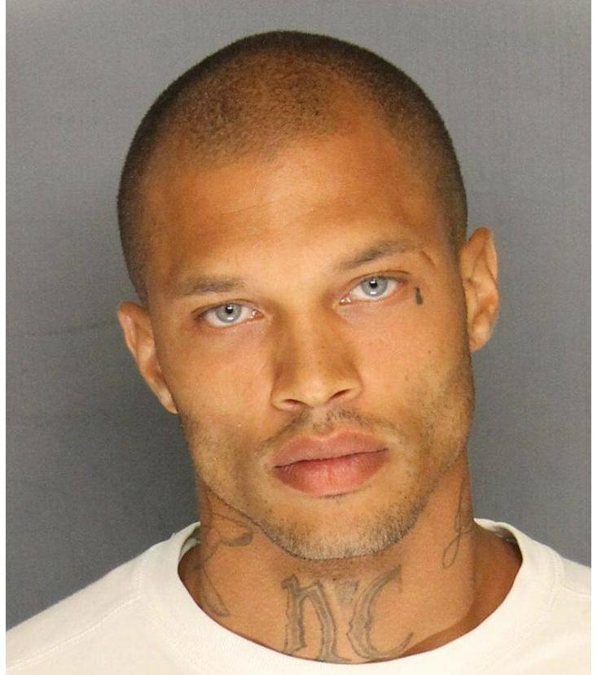

FACTS ROMANTIC ON CULTURE
POSTED BY BRIAN GALLAGHER ON FEB 25, 2016
On June 18, 2014, a photo of a very handsome, no-name man was posted on the Web. Within 48 hours, it garnered 62,000 “Likes” on Facebook and became a media spectacle. Today, the Like count is up to almost 102,000, and the photo is still attracting comments. But thousands of pictures of highly attractive people are posted online every day, and no news articles are written about most of them—so why this one? Because this sultry photo was a mugshot.
Jeremy Meeks, a then-30-year-old convicted felon, was arrested on weapons charges and slapped with $900,000 bail. In his arrest photo taken by the Stockton Police Department and uploaded to its Facebook page, Meeks offered a rigid jaw line, pronounced cheekbones, bluish-grey eyes, and a generous pair of lips. The photo flew around the Internet, and the comments began pouring in. One typical reaction: “Being that sexy is illegal?” (This “hot convict” phenomenon isn’t exclusive to men, by the way. After her arrest photo went viral in September, the until-then little-known model Angela Coates wrote, “I’m the female Jeremy Meeks.” An admirer of hers tweeted, “I would sell off our family house for the bond money, leave my wife and kids homeless for Angela Coates :(”)
Some armchair psychologists tried to figure out why mugshot hotties attract so much attention, so much of it positive. One commenter on the Meeks thread wrote, “People are not taking this seriously because he is too beautiful to do wrong” (emphasis added). This encapsulates a pernicious illusion known today as the “beauty-is-good” stereotype, which was articulated in a landmark 1972 study titled “What is Beautiful is Good.” In the decades since then, research has shown the varied and far-reaching ways that people’s facial attractiveness affects our judgment of their personalities.
It’s now more or less indisputable that when we see someone’s face, without really thinking, we assess that person’s character despite the lack of any truly relevant information. And when that person is attractive, studies have shown that we tend to see that as an indication of superior social prowess and “sexual warmth.” But notably, we are not biased to think gorgeous people are more empathetic or moral; in comparison to both really attractive and unattractive people, it’s the moderately attractive ones that we think are more willing to lend a helping hand. So it seems that most of us do not buy the idea that Meeks is “too beautiful to do wrong.”
But maybe it is true to say, in accordance with the “beauty-is-good” stereotype, that Meeks is too beautiful to be a criminal.
In a 1977 study, researchers wanted to see how labeling a photo with a man’s face as either “murderer” or “lifeboat captain” would affect their subjects’ ability to reconstruct an approximation of that face from memory using a police Photofit kit. They were then asked to rate the face for a number of traits (e.g., “intelligent,” “pleasant,” “good-looking,” “sociable,”) with ranks from 1 to 7. A second group then rated their impressions of the reconstructed face, but without the “murderer” and “lifeboat captain” labels.
It’s as if, contained in the image of a mugshot hottie, there are two clashing stereotypes battling for supremacy over our final judgment.
Noting the beauty-is-good stereotype mentioned above, the researchers claimed in their experiment to have found “an effect going in the other direction”—that bad is unattractive. They wrote: “The face of a man labeled as a criminal was rated as physically less attractive than the same face labeled with a socially desirable category.” The belief that one is looking at a criminal face biases us to judge the face as more ugly than we otherwise would.
Similarly, in a 1984 study, researchers had a group of subjects classify a bunch of faces as belonging to bad or good guys. They then had another group of subjects rate these faces—without knowing how the prior group classed them—as more dirty or clean, more cruel or kind, more friendly or unfriendly, more sane or insane, etc., and “the ratings were consistent with expectation,” the researchers wrote. “Bad guys were dirtier, crueler, insaner, etc., than the good guys.” To be thought a criminal, it seems, is to be thought generally worse socially, intellectually, hygienically, etc. Despite the popular perception that women are attracted to bad boys, it seems that on average, a suspicion of bad behavior is a turn-off.
Maybe this is part of what’s striking about looking at Meeks’ mugshot. We clearly see him as highly attractive, yet the knowledge that he’s been charged with a crime inclines us to think he’s less attractive—though that didn’t stop talent scouts from seeing Meeks’ appeal to “modeling agencies around the world, endorsement deals and reality show interests.” Another psychological conflict of sorts may also be at play.
On one hand, Meeks’ stunning face biases us to believe that he’s got great social skills, is sexually competent, and overall probably a friendly—but not necessarily an altruistic—guy. On the other hand, we realize this face is framed within the confines of a mugshot, denoting him to be a criminal, which biases us to think otherwise.
It’s as if, contained in the image of a mugshot hottie, there are two clashing stereotypes battling for supremacy over our final judgment. And given all the Facebook Likes for Meeks’ face, and the favorable comments it still garners, it seems the perceptual struggle it induces is thoroughly enjoyable.
Brian Gallagher is an assistant editor at Nautilus. Follow him on Twitter @brianscottg.